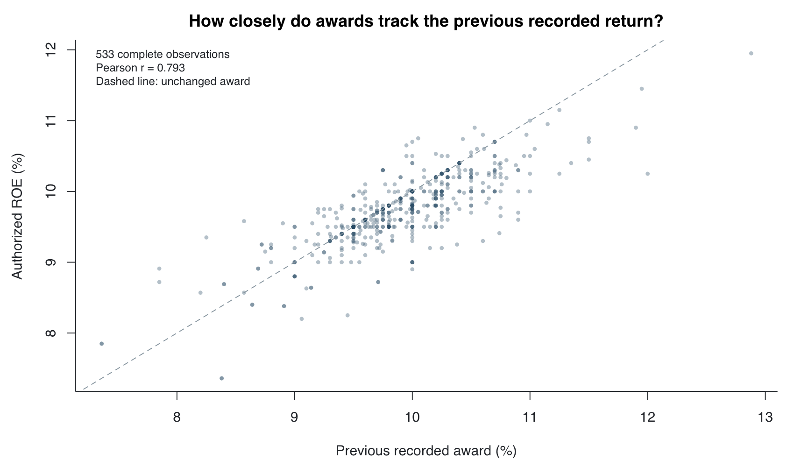
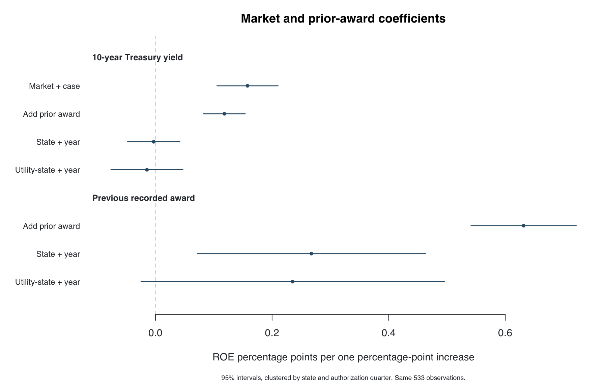
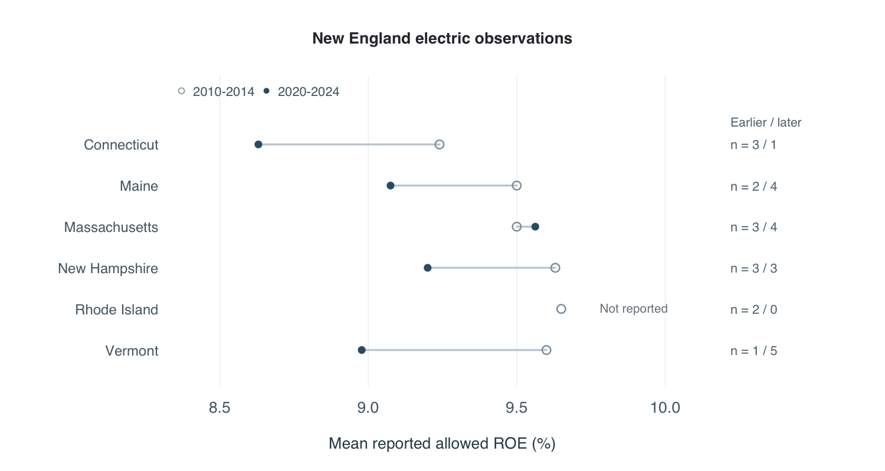

Market Conditions and Persistence in Authorized Utility Returns
regulatory economics · panel data · Python, R and JavaScript
State utility commissions set the return on equity that a regulated utility can earn through its rates. That decision affects what customers pay and the return available to finance investment. I investigate how authorized returns relate to financial conditions and the utility’s previous award.
The starting question was whether allowed returns moved with the rise in Treasury yields after 2021. A comparison of period averages showed a much smaller increase in allowed returns. I then built a case-level panel to test whether that result reflected interest rates, case composition or persistent differences between utilities and jurisdictions.
The main analysis uses 533 complete observations from 2010–2024, covering 47 jurisdictions and 131 utility-state groups. Previous and current awards have a correlation of 0.79. A positive Treasury association in the pooled model becomes close to zero after state and year controls. Including previous awards improves prediction substantially over the market-and-case model, but only slightly over using the previous award itself. These results make persistence a specific finding to explain through the written orders.
What explains variation in allowed returns?
Financial models provide a reason to expect a relationship with market rates. In the capital asset pricing model, for example, the required equity return depends on a risk-free rate, systematic risk and the market risk premium. An authorized return also reflects the evidence admitted in a proceeding, the commission’s policy and any formula or performance adjustment. I therefore compare market measures with prior awards and case characteristics, rather than assuming Treasury yields alone determine the outcome.
I ask three empirical questions. Do market conditions remain associated with allowed returns after accounting for state and year differences? Does the previous award add information? Does that information improve predictions for cases outside the coefficient-estimation period? Rode and Fischbeck’s work on regulated equity returns motivates the financial question; the original New England orders let me examine mechanisms that a numerical table cannot identify. Study reference.
Building the panel
I use the Edison Electric Institute’s public 2025 Q3 Rate Review workbook. The full completed base-rate table contains 2,230 observations, with 1,832 reported awards. For the factor study I use complete calendar years from 2010 through 2024: 777 entries and 589 reported awards. Requiring a valid prior award, filing duration and the four economic measures leaves 533 observations. The 244 exclusions remain in the downloadable panel with their missing fields. I do not fill missing returns with zero or a carried-forward award.
Each observation retains its original worksheet row, utility label, state, docket and authorization date. The workbook’s Settled label means completed; it does not establish that the outcome was a negotiated settlement. Formula applications and shared proceedings can appear in the table. I check the source against 31 published quarterly counts and means, and preserve the workbook’s fingerprint. A fresh October 26 download matched the saved file. It remains the newest Rate Review workbook linked on EEI’s finance page.
| Variable | Construction | Reason for including it |
|---|---|---|
| Treasury yield | DGS10 mean over the 90 calendar days before authorization | Level of nominal long-term risk-free rates |
| Term spread | Ten-year minus three-month Treasury yield, same window | Shape of the yield curve |
| Inflation | CPI-U twelve-month change, two reference months earlier | Observed price conditions |
| Financial stress | Latest STLFSI4 observation at least fourteen days earlier | Broader market conditions beyond the Treasury level |
| Filing duration and case type | Elapsed years; distribution or vertically integrated case | Timing and differences in the regulated business |
| Previous award | Latest strictly earlier recorded award for the same utility-state label, within ten years | Persistence across successive observations |
The economic series come from the Federal Reserve and BLS through FRED. I also checked CPI against the direct BLS API: all 189 months from January 2010 to September 2025 agree. All regressions use the October 26, 2026 historical vintage, including any revisions. The date lags avoid joining later observations to earlier decisions; they do not reconstruct exactly what a commission knew at the time. Source definitions and verification.
Persistence is stronger than the simple market relationship
The unadjusted correlation between current and previous awards is 0.793, compared with 0.149 for the Treasury mean. Rank correlations give the same ordering. I then estimate four OLS specifications on exactly the same 533 observations. The first includes market and case variables. The second adds the previous award. The remaining models add state and year effects, then utility-state and year effects.

| Specification | Treasury coefficient | Previous-award coefficient | R² |
|---|---|---|---|
| Market and case variables | 0.158[0.105, 0.210] | Not included | 0.320 |
| Add prior award | 0.118[0.082, 0.154] | 0.631[0.541, 0.722] | 0.690 |
| State and year controls | -0.003[-0.048, 0.042] | 0.267[0.072, 0.463] | 0.814 |
| Utility-state and year controls | -0.015[-0.077, 0.047] | 0.235[-0.025, 0.495] | 0.839 |
Coefficients measure ROE percentage points per one-percentage-point change in the predictor. Brackets show 95% normal Wald intervals with finite-sample-corrected clustering by state and authorization quarter. All models include the four economic measures, filing duration and case type. R² includes the contribution of fixed effects and is not a measure of forecasting accuracy.
In the market-and-case model, a one-percentage-point higher Treasury yield is associated with 15.8 basis points of higher allowed ROE. With state and year effects, the estimate is -0.3 basis points, and its interval includes zero. Common annual changes and persistent state differences account for much of the pooled relationship. Year effects also absorb much of the variation in national rates, so this is a narrower comparison among cases decided within the same year.
A one-percentage-point higher previous award is associated with 26.7 basis points of higher current ROE after state and year controls. The utility-state specification gives a similar point estimate, but a wider interval that includes zero. That difference matters: part of the apparent persistence can reflect stable characteristics of a utility, its regulatory mechanism or its jurisdiction.

Do the relationships hold up in later cases?
I estimate the model coefficients using 345 observations from 2010–2019, then evaluate 188 observations from 2020–2024. This test includes the pandemic and the subsequent rate increase. I compare the models with two simple benchmarks: the training-period mean and the utility’s previous recorded award.
| Prediction rule | Mean absolute error, bp | Root mean squared error, bp |
|---|---|---|
| Training-period mean | 42.2 | 59.9 |
| Previous recorded award | 24.2 | 35.8 |
| Market and case model | 53.1 | 69.9 |
| Model with previous award | 23.3 | 32.3 |
The market-and-case model performs worse than the training mean in this test. Adding the previous award cuts mean absolute error from 53.1 to 23.3 basis points. Using the previous award alone gives 24.2 basis points, so the augmented model’s improvement over that stronger baseline is only 0.9 basis points. I would not describe that as a large forecasting gain. The clearer result is that a model of these awards needs to account for persistence.
This is a retrospective temporal check. Earlier test-period awards can supply later test-period cases with a prior award; coefficients remain fixed at their pre-2020 estimates. The economic histories are revised, so the calculation does not represent forecasts produced with data available in 2019.
Alternative specifications
The state-and-year-adjusted previous-award coefficient is 0.269 with a 30-day market window and 0.264 when New England is omitted, close to the main estimate of 0.267. On the same 531 request-pair observations, adding requested ROE reduces that coefficient from 0.265 to 0.178. Requests and awards are determined within the same proceeding, so this comparison measures additional information without treating a request as an external cause.
I also calculate changes between successive observations for the same utility-state label. The sample contains 435 changes. The Treasury-change coefficient falls from 0.103 to 0.038 after year controls; the adjusted interval includes zero. The market relationship is therefore sensitive to how common time variation is handled in both levels and changes. All specifications.
Open the model workbench ↗
Change the period, case type, controls and market window. Recalculate correlations and regressions, refresh the economic histories, inspect source rows and export a calculation record.
Regional results
For a broader view of New England, I extract 57 completed electric observations from 2010–2024 from the EEI workbook. 46 report an allowed return. This panel covers all six states and retains the original worksheet rows. It includes formula applications as well as base-rate proceedings. These observations overlap with the PDF archive and must not be added to it as unique orders.
Mean recorded awards are lower in 2020–2024 than in 2010–2014 in four of the five states with awards in both periods. Massachusetts is the exception, with a 6.25-basis-point increase. Rhode Island has no reported awards in the later window. Connecticut's later mean rests on a single award, so I do not interpret these differences as a ranking of state policies.

| State | 2010–2014 awards / entries | 2020–2024 awards / entries | Change in mean ROE |
|---|---|---|---|
| Connecticut | 3 / 3 | 1 / 1 | -61.00 bp |
| Maine | 2 / 2 | 4 / 4 | -42.50 bp |
| Massachusetts | 3 / 3 | 4 / 12 | +6.25 bp |
| New Hampshire | 3 / 3 | 3 / 3 | -43.00 bp |
| Rhode Island | 2 / 2 | 0 / 0 | Unavailable |
| Vermont | 1 / 1 | 5 / 5 | -62.20 bp |
I also compare the same utility labels within the same state. Of the 8 groups present in both longer windows, 7 have lower later-period means. Giving each group equal weight produces a decline of 39.8 basis points. This check reduces changes in the utility mix, but it still includes different proceedings and regulatory mechanisms. The labels come from the workbook; I have not independently resolved company renamings.
Over the shorter 2020–2021 to 2023–2024 comparison, New England's mean award rises by 45 basis points while the matched Treasury yield rises by 291. Each window contains only seven reported awards. The state and utility composition changes, and the Vermont entries include formula adjustments. The comparison tool lets a reader check the result by state, case type and weighting.
Download the 57-entry regional panel · Recalculate the longer comparison
What the original orders explain
The original orders let me distinguish a financial return estimate from the return actually used in rates. In Central Maine Power's 2020 order, for example, a 9.25% base return becomes an 8.25% operative award after a 100-basis-point performance reduction. United Illuminating's 2023 order has a 9.10% base return and a 47-basis-point reduction, giving 8.63%. Treating either operative award as an unadjusted cost-of-equity estimate would misread the decision.
The archive is uneven across states, services and years. The table below reports that coverage alongside the awards. I use it to identify comparisons worth investigating. It does not establish that a state systematically sets higher or lower returns. Settlement approvals and formula implementations can be included separately. Their outcomes should not be read as new commission choices between competing financial models.
| State | Orders | Awards | Missing | Proceedings | Median | Observed range |
|---|
Plot and inspect the individual orders
Filled circles are primary orders. Open circles are settlement approvals. Squares are formula implementations. The horizontal scale is the recorded allowed ROE. Missing awards are retained in the coverage table. Some orders share a proceeding; they are not independent experiments.
| State / date | Utility / docket | Allowed ROE | Original evidence |
|---|
Vermont Gas provides a direct example of the mechanism. Its approved formula return changes from 9.62% in the August 2025 order to 9.63% in the August 2026 order. The latter decision attributes the change to the plan’s formula. That is evidence of a stated adjustment rule. It does not require an inference about anchoring from two similar percentages. Read the 2026 explanation.
Change the comparison
Choose two periods, a region or jurisdiction and a case type. The table reports the available records. The chart compares changes using authorizations with both an award and a Treasury match. Common-group weighting gives each shared jurisdiction or utility-state group the same weight.
Loading the preserved national source records.
Inspect the selected source observations
Rows refer to the original All Rate Cases 2025Q3 worksheet. An observation is a utility authorization, which may share a proceeding with other entries.
| Date | Utility and docket | Allowed ROE | Award minus request | Treasury | Workbook |
|---|
What the estimates suggest
Successive recorded awards contain information that the selected national market measures do not capture. The result survives several timing and sample checks, while its strength declines with more detailed controls. I interpret this as evidence of persistence in authorized returns. Possible explanations include stable utility risk, established commission policy, formula design and direct reliance on previous decisions.
The numerical models cannot choose among those explanations without additional evidence. That is the purpose of the original-order analysis: to record when a commission explicitly uses a prior award, accepts a financial estimate or applies an adjustment rule. A high lag coefficient does not establish that a commission relied on precedent, and a Treasury-minus-ROE difference does not estimate the equity risk premium.
The next identification question is more demanding than adding another national series. It requires a change in a regulatory rule or another defensible source of variation, with enough comparable cases on each side to separate that change from concurrent conditions. The current investigation establishes the associations and the robustness checks that such a design would need to explain. Original text coding and independently supplied ratings remain separate work; no model-generated labels enter the reported numerical findings.
Reproducing the analysis
Python parses the original workbook, applies the dated joins, estimates the models and records every included row. Base R independently checks 27 coefficient and clustered-standard-error pairs and both previous-award correlations, then produces the figures. The workbench uses a separate JavaScript QR implementation, checked against the Python estimates. Native Stata syntax is included; Stata execution has not been verified.
./research national
./research factors
Rscript analysis/factors.R reports/factor-study
./research overviewThe factor-study bundle includes the original input records, source fingerprints, estimation tables, holdout predictions and code. The period-comparison bundle reproduces the earlier descriptive calculations. Economic refreshes are stored separately so a live retrieval cannot silently change the paper’s results.
Sources and methods
- Edison Electric Institute, Rate Review 2025 Q3. Preserved workbook record.
- Board of Governors of the Federal Reserve System (US), DGS10; Federal Reserve Bank of St. Louis, T10Y3M and STLFSI4; U.S. Bureau of Labor Statistics, CPIAUCNS. Retrieved from FRED, Federal Reserve Bank of St. Louis, October 26, 2026. Source attribution does not imply endorsement.
- BLS Public Data API, CPI series CUUR0000SA0. A second retrieval route for the CPI check.
- Analysis specification · Methods, timing and robustness · Source review.
- Original-order cohort protocol and text-coding coverage.
- David C. Rode and Paul S. Fischbeck (2019), Regulated equity returns: A puzzle, Energy Policy 133, 110891.